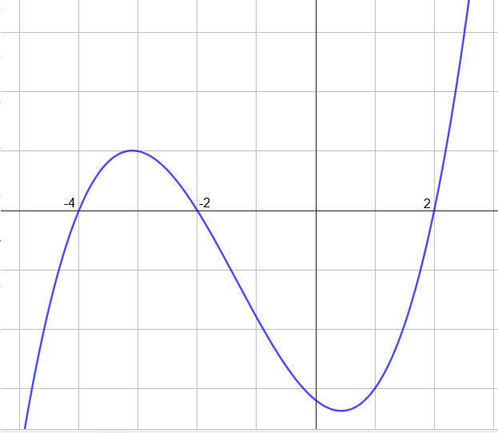

La funzione
\[
f(x) = x^3 -4x^2 -4x +16
\]
ha il seguente grafico.

-
che segno ha l'area sottesa al grafico di \(f\) in corrispondenza dell'intervallo
\([-4\,,\,\,-2]\)?
-
che segno ha l'area sottesa al grafico di \(f\) in corrispondenza dell'intervallo
\([-2\,,\,\,2]\)?
-
che segno ha l'area sottesa al grafico di \(f\) in corrispondenza dell'intervallo
\([-2\,,\,\,4]\)?
-
Calcolare l'area sottesa al grafico di \(f\) in corrispondenza dell'intervallo
\([-2\,,\,\,4]\).